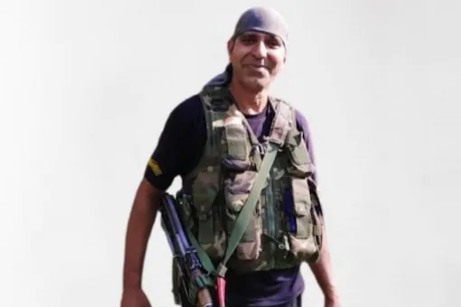
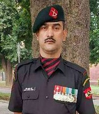
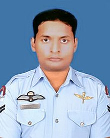

The Ashoka Chakra (alternative spelling: Ashok Chakra) is India's highest peacetime military decoration awarded for valour, courageous action or self-sacrifice away from the battlefield. It is the peacetime equivalent of the Param Vir Chakra (PVC), and is awarded for the "most conspicuous bravery or some daring or pre-eminent valour or self-sacrifice" other than in the face of the enemy. The decoration may be awarded either to military or civilian personnel.
1-
Babu Ram
Assistant Sub-Inspector

2-
Nazir Ahmad Wani
Lance Naik

3-
Jyoti Prakash Nirala
Corporal
